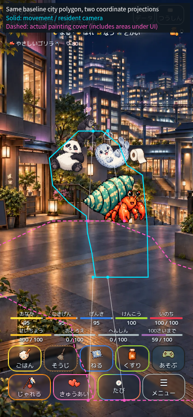

従来版とVERSION 3へ、同じ開始位置から同じドラッグを入力した静止画です。水色が従来版、赤紫がV3。十字は足元、枠は透明余白を除く本体と貝殻です。実機SafariではなくChromiumでの測定です。
水色＝歩行系、赤紫破線＝実背景のcover。赤紫にはUIの下の領域が含まれるため、そのまま歩行領域として採用できません。

ゲーム・既存比較サイトはこの資料から更新されません。原因分析・4版の測定表